Osteria: Hostaria Terrasanta
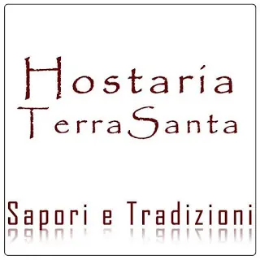
Osteria:Oggi voglio scrivere un articolo un pò chiacchiericcio ma che di sicuro vi provocherò un languorino allo stomaco :D
Infatti voglio parlarvi di un ristorante campano, situata nel borgo medievale di Materdomini a Nocera Superiore.
Si trova precisamente in Via Cupa,Materdomini - Nocera Superiore
Vi sto parlando di Hostaria Terrasanta.
I piatti tipici in chiave moderna in un locale alla moda, preparati con prodotti di produzione propria e accompagnati da una scelta di vini pregiati.
Tutto in un'atmosfera rustica allestita con arredi in legno scuro e decorazioni in pietra. Insomma un posto ideale per una cena romantica o in famiglia.
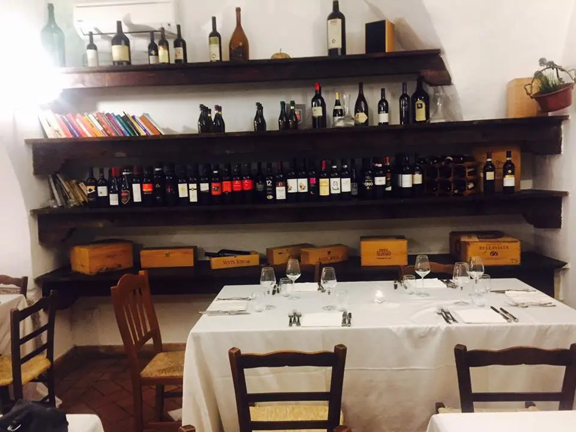
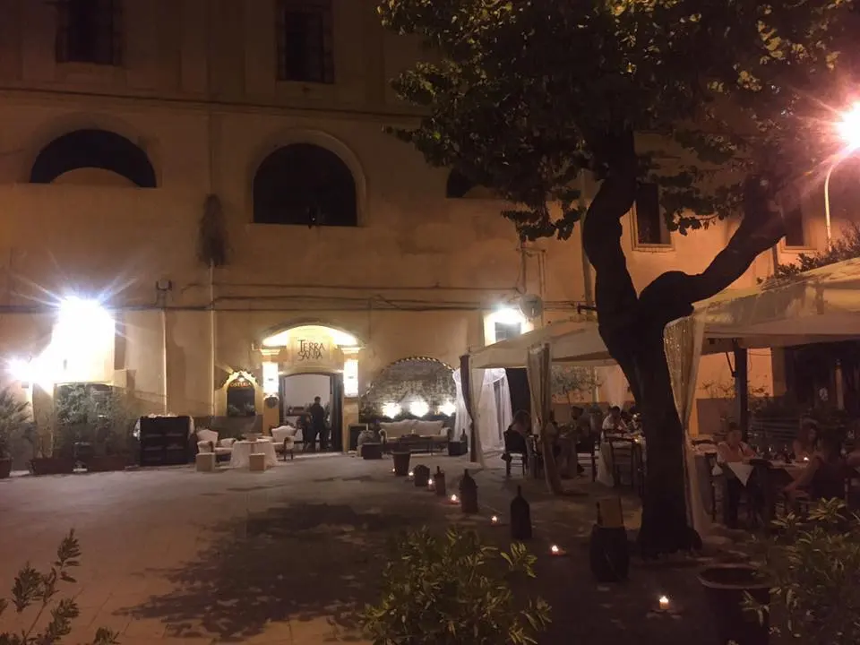
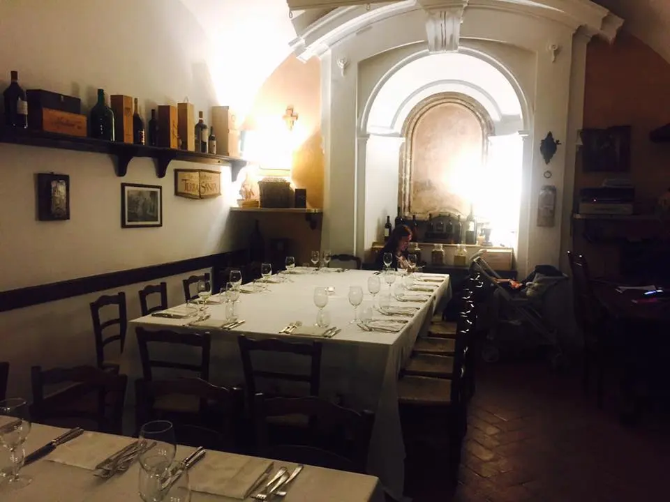
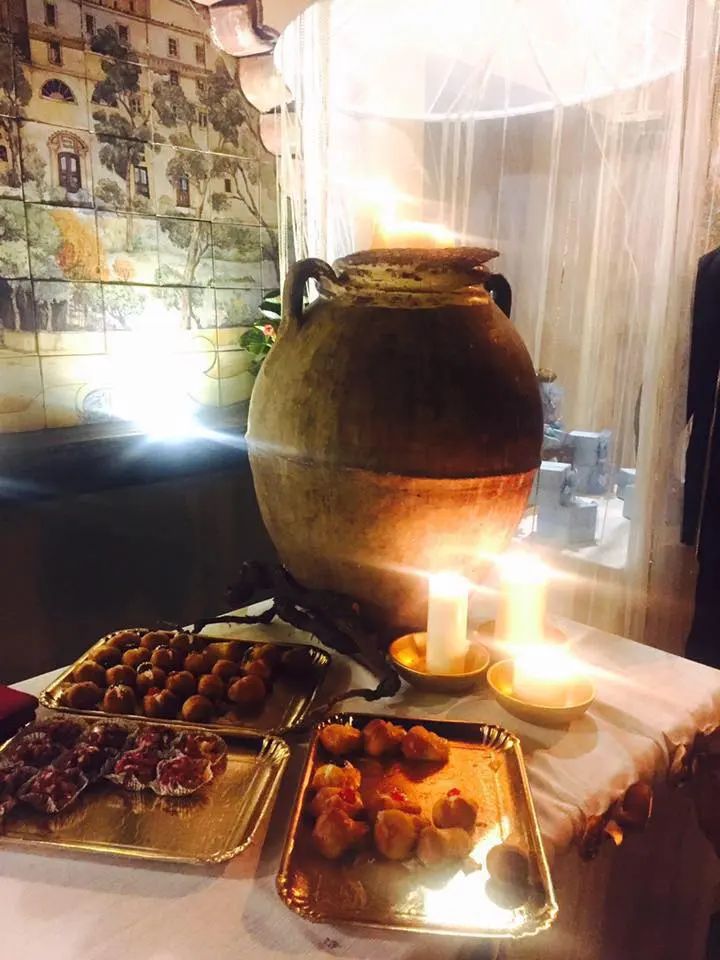
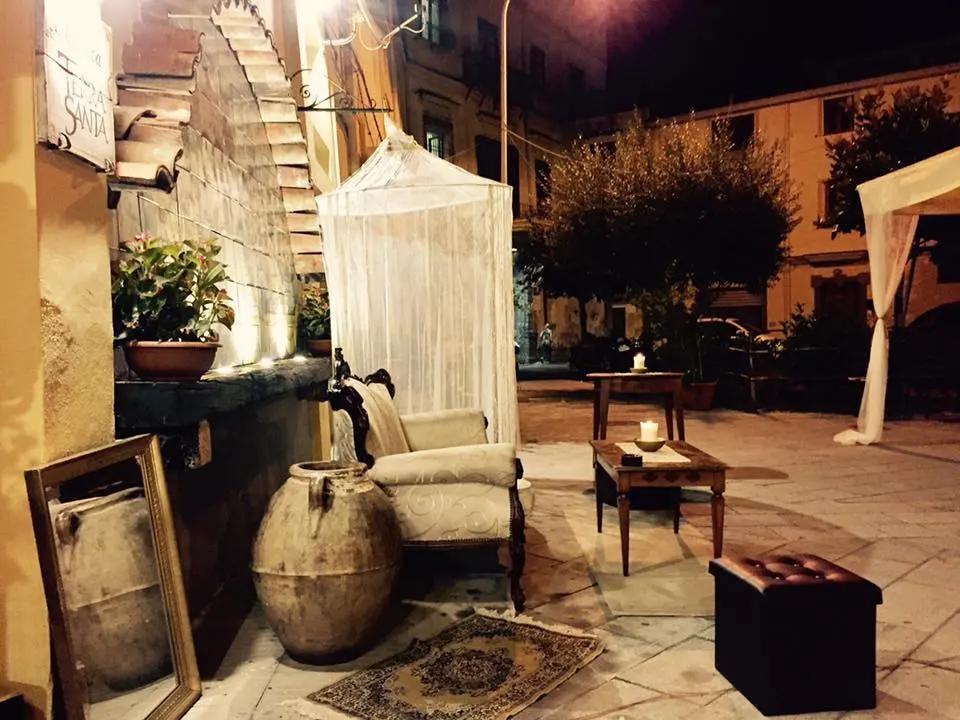
Io da campana vi posso dire che le pietanze che vedete qui sotto di questa osteria, sono piatti di una lunga tradizione napoletana. Di sicuro non andrete a casa con un pò di spazio nella pancia ahahah.
Vi mostro alcuni piatti che di sicuro i campani o chiunque è di passaggio da queste parti, non potrà non fare una tappa qui.
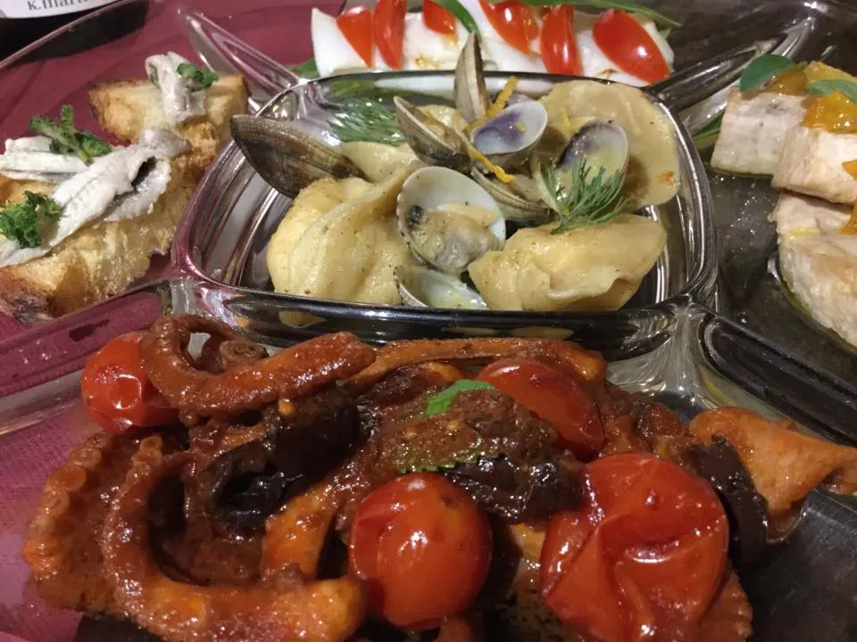
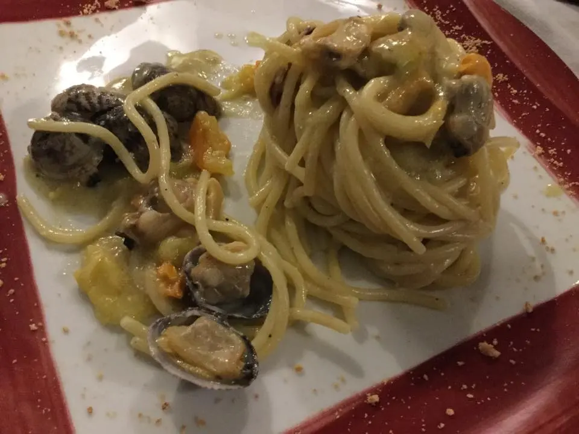
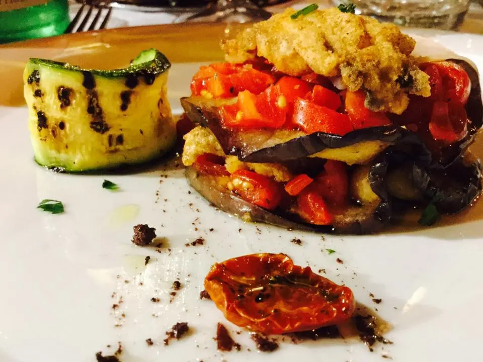
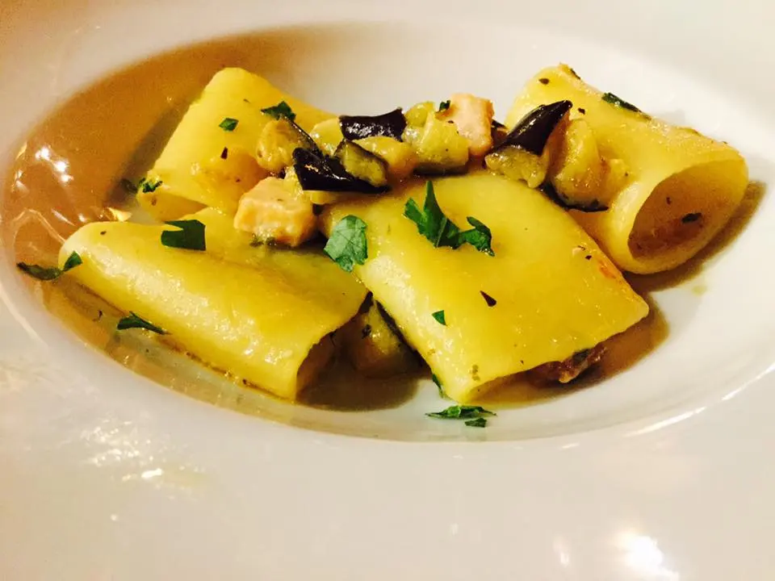
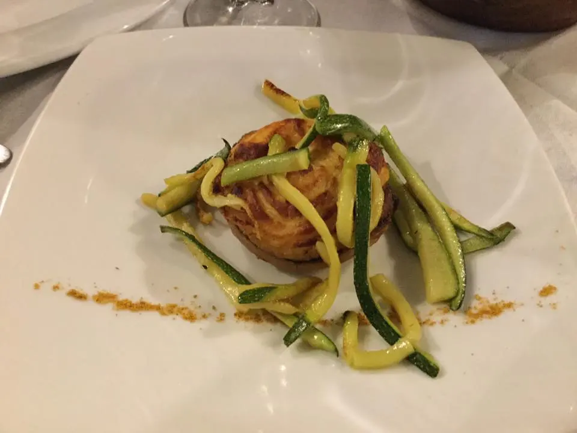
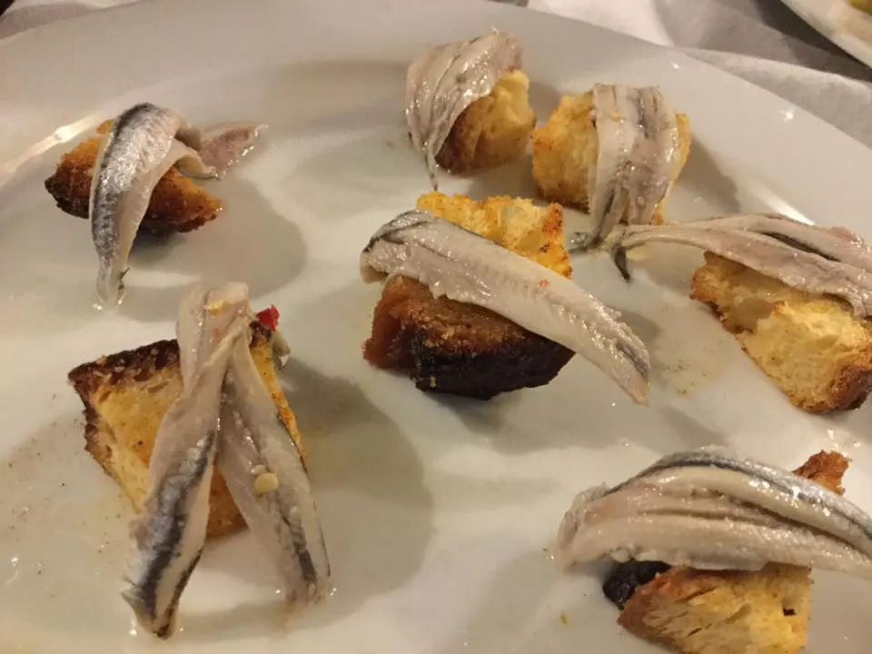
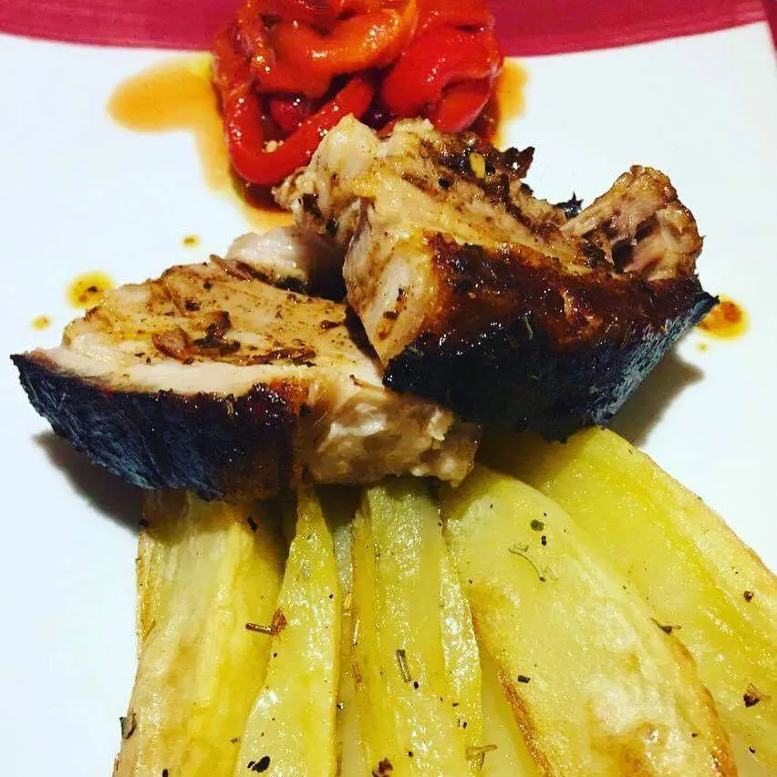
La golosità ha sull’amore mille vantaggi. Ma il più importante è che, mentre bisogna essere in due per abbandonarsi all’amore, si può praticare la golosità da soli, anche se l’abate Morellet ha detto:
“Per mangiare un tacchino al tartufo bisogna essere in due: il tacchino e se stessi”.
(Guy de Maupassant)
Cucina a km 0, con prezzi convenienti, un ottimo rapporto qualità - prezzo.
Un posto rilassante con materia di prima qualità.